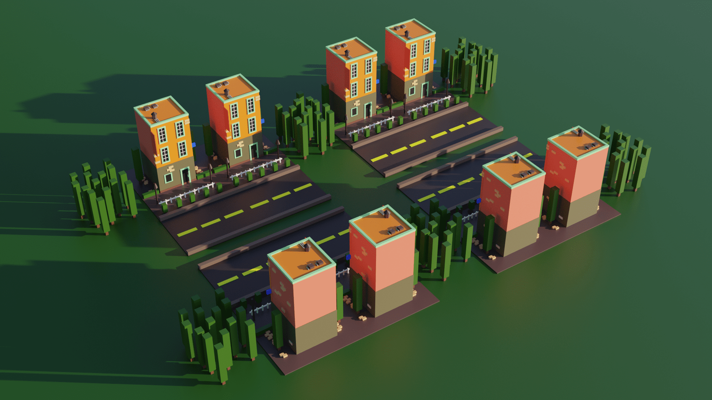

Welcome to the 3D Stuff page! Here you can take a look at some of my 3D-related projects. I make 3D models and animations using Blender and I have
created 3D prints as well.
3D Modelling with Blender
The software I use to make my 3D projects is Blender which is a free and open-source software. I learned how to use Blender through tutorials on Youtube
and messing around with Blender on my own time. Below are some of my 3D renders made using Blender.
Synsun City
Here is a 3D render of mine which I created in school. For this one I played around with the lighting and the colours until it was right.
This piece is inspired by the music style of Synthwave which is often complemented by cool visuals of neon cityscapes and beautiful lights. I tried
replicating that style by using lots of blues and purples and including many glowing lights emanating from the buildings. I also threw in some cars to
liven up the place and the Synthwave sun in the background to watch over the cityscape.
To make this render I began by creating a layout of where all the different buildings would be. I started by creating a long road, then began modelling
buildings with basic geometric shapes around it. The first one I made is based on Taipei 101 which you can see near the middle of the image. I then added
blue and purple colourations to everything as well as glowing lights to the faces of the buildings to brighten up the landscape. I then created the Synthwave
sun by adding a gradient to a sphere and creating slices through it using boolean modifiers. Finally I made the starry night sky and created the cars,
streetlamps, plants and benches that dot the sidewalks.
Buildings

This is my first ever finished Blender render and where my 3D modelling journey began. Shown above is a series of apartment buildings by a road surrounded by
rectangular trees and fallen bricks. Originally the trees were floating slightly above the ground, but I've fixed that now. I made this by following a Blender
tutorial and once the video was finished, this is what I ended up with. For this render I just used basic geometric shapes like cubes and cylinders as well as
simple and colourful materials.
Psychic Slug Boi
This here is a render of Slug Boi's head, the little guy who represents my online presence! I haven't thought of a better name, so I just call him Slug Boi.
I originally made this render as a visual for a remix I made of the song "Psychic Island" from the videogame My Singing Monsters. If you are curious about that
video you can see it here.
I wanted this image to look spacey as the original song had a vast psychic spaciness to it. The outer space background of the render is actually the same as
the background in Synsun City, just with different colours. This is the first time I really experimented with lighting. I made the eyes glow to stand out in
the darkness of space and added some spotlights to create 3-point lighting. 3-point lighting is a method for lighting up objects that unsuprisingly uses 3
lights to create a sort of studio lighting effect.
Backrooms Level 94
This is a render of something known as "The Backrooms Level 94". I created this render as an art project for my highschool art class since I had no other
assignments to do and I wanted to hone my 3D modelling skills a bit more. For context, The Backrooms come from a 4chan creepypasta which depicted an
uncanny liminal space. Shortly after the post was uploaded, others began adding to the idea, creating many different levels and entities which inhabit the
endless Backrooms. One of these levels is called Level 94, which is what this render is based on. Level 94 is a town that sits in a vast, grassy, hilly
landscape with blue skies all around. During the day the town is safe, but once night falls the "Animations" come out to hunt.
For this render I used particle
effects to create the grass that covers the landscape. Originally the grass was too huge and covered the landscape in a jungle as tall as the houses. It wasn't
until I got far into this project that I realized my viewport settings and render settings were not the same, which is why everything looked fine until I rendered it.
I also used bump maps to create more immersive textures on the houses, paths and the water tower in the background. Bump maps essentially simulate bumps
and divots on the surfaces of objects which can create a much more realistic texture.
Rain World
Like the Psychic Slug Boi I made before, I made this render to go along with a remix I made of a song. This time the remix was of "Floes" from the videogame
Rain World. Pictured is a small white creature known as a slugcat, the main protagonist of the game which you control. The slugcat is hiding from a much
larger and formidable creature known as a Miros Bird. The biomechanical bird, With its shining eye, stalks the Shaded Citadel in search of the hiding slugcat
who cowers in fear from the razor sharp beak.
For this render I again experimented with lighting. The environment I created is extremely dark, so to compensate I made many elements of the render glow in the
dark. The yellow eye of the bird glows bright in the night and in the background blue plants illuminate the landscape. I wanted to make the bird look terrifying
and menacing, so I filled its beak with a bunch of cones to create its teeth. Fun fact: the bird is covered in highly detailed feathers that severely heated up
my computer to dangerous levels as I was creating the render, however you can only see a few on the top of its head. I made the rest of its body too, but you don't
see that in the render either. So yes, I did a bunch of extra work only for it to go unused. Once all the shapes were done, I created some textures for the walls
and ground as well as a yellow spotlight to add to the bird's threatening glare.
Airplane
This render is another project I made for my highschool art class. The title of my piece is called "I'll Find a Way Through, I Always Do" and captures
my state of mind during my grade 12 year. In grade 12 I've had so many things pop up that have caused intense feelings of stress, such as university applications,
school work and commitments to projects which all intersected with one another and created a busy schedule for me. I was the plane, soaring through a stormy sky
with lighting that tries to strike me down, but I find a way through. No matter how much lighting and thunder the world throws at you, keep flying and
you'll find a clearer place on the other side.
Here I created actual 3D clouds for the first time as well as lightning using the Blender grease pencil. I had a major struggle with the grease pencil as I
tried to figure out its quirks and rules, and for a long while I didn't realize that the grease pencil would only show up in the final render until the render
was completely done. Because of this misunderstanding I spent too much time watching videos about the grease pencil and finding no solution to my problem
until I found it on some forum. Besides that minor mishap the rest of the render went quite well. I learned how to make clouds using volume modifiers as well as
rain using particles. I then added motion blur to the rain and jet engines by animating them which created more movement in the image and made the plane look more like
it was actually flying through the sky, rather than hovering on a string.
Shrek
Here is a render of Shrek from the movie "Shrek" staring at you ominously in The Backrooms. The original purpose of this render was to be a game over screen
in a cheap horror game my friend and I were working on using the Unity game engine. In the game, you are in The Backrooms and must escape the colossal labrynth by
finding the exit elevator. As you explore The Backrooms, various entities hunt you down, one of these entities being Shrek. As of now the game which we call
"Imposter Syndrome" is on indefinite hiatus, as Unity tried to charge developers for each download of their games, which we did not appreciate.
The environment of The Backrooms utilizes a bump map for the carpet and the ceiling. I found some nice textures for carpet and ceiling tiles and applied them
to some planes which created the somewhat realistic floor and ceiling you see in the render. The thing that's definitely not realistic about this render
however is Shrek. Shrek is the first fictional character (besides my slug dude) that I tried to create in 3D. I found a reference image of him online, imported
it into my Blender project and began following the reference by creating basic shapes and molding them until they looked like Shrek. I animated him too which you
can see in the animation section of my website, however Shrek's animations weren't the best as it was my first time using rigs for animation in Blender. His sleeve
and arm did not move with eachother, so his arm clipped through his clothing as he walked and ran. I also made sure to give Shrek an unsettling smile filled with
many teeth as he was part of a horror game, and when he chased you I wanted to make sure it felt extremely disturbing and horrifying.
Slug Toaster
This render is one I made just for fun. Pictured is Slug Boi, but I turned him into a toaster and put him in a kitchen floating through space. For this one I
mainly wanted to improve my 3D modelling skills and see if I was capable of creating something as complex as a typical toaster. I'd say that I was successful
in creating the slug toaster, and like my Rain World render I yet again created details that the camera does not see. On the back of the slug toaster are
several buttons with different labels I created using text. You can't see them here, but trust me they're there. I also experimented with depth of field in this image.
If you look at the slug toaster you'll notice that it looks more clear than its surroundings which are blurry. Additionally, the stars which are reflected in
the glasses are blurry too. This blur is created by depth of field. I focused the camera n the toaster, meaning its surroundings became unclear and the focus
and main focal point of the image is the toaster.
Behind the Scenes
Below are some screenshots of the Blender projects I showcased here. You can see some of the behind the scenes of my renders.
The is a top down view of Synsun City. Here you can see the layout of the scene. The camera is near the right of the scene from this angle and is pointing
towards the left.
This is the full body of the Miros Bird. Here you can see all the detail that was hidden off camera in the Rain World render. Lots and lots of feathers Here
along with robotic legs for the bird.
This is the back of the slug toaster. I put it in material view so you can read the text on the buttons easier. This toaster is actually based on the toaster
in my house and features a bagel, defrost and reheat function along with a knob to control heat and the lever for lowering the toast into the toaster. You can
see that the toaster is currently in bagel mode.
3D Printing
In addition to creating 3D renders, I have also created some 3D prints. I used Blender to create the models for my prints which I then exported to Prusa Slicer.
From there I sent the data to 3D printers which constructed my prints using the power of science and technology. Oftentimes however, my prints would fail due
to a variety of reasons, such as a model that is difficult for the printer to create or too fast of a printer speed. Here I showcase some of my 3D prints which
I have created using Blender and Tinkercad.
3D Printed Slug
The first 3D model I created to be printed is one of Slug Boi. I made this for a school project where we first learned about 3D printing and its potential.
The assignment was to find 2 prints online and create one on our own, so I chose my Slug Boi to base the print on and began modelling. For this assignment we
used Tinkercad as it is a simple and easy to learn software for making 3D models. Using basic shapes like circle and ovals I created the basic model above.
Afterwards we began printing our creations. Below is a video showing the model being created by the printer.
After it was done printing I removed it from the printer, took off the supports and began painting. Below are some photos of the process.
Here you can see the final print, fully painted. As my first 3D print which I modelled I was happy with how it turned out, however I wanted to create something
more complex. I then began to use Blender to create 3D models to be printed.
Petals
For my next 3D print I modelled another original character of mine. I created a model of a character I call Petals, who is a blue and white flower thing with
a scarf. Below are some screenshots of the model.
Next I sent the finished model to the printer where the model began getting printed.
Once printing was finished, I removed the supports and began painting. As I was removing the supports I ended up breaking off the scarf because it was too thin,
so I instead used string to create the scarf which I think actually looks alot nicer than what I had imagined.
Here it is, the final, finished print of Petals the flower thing. As my first 3D print modelled in Blender I'd say it turned out really nicely. Later on I
displayed this at a school art show and I ended up winning an award congratulating my efforts during my school's makerspace class. This, along with Synsun
City were both part of that class.
Moai Man
This next 3D print is another one made with Blender. For this model I utilized an armature to pose the model in various ways until I found a pose I liked. A
Blender armature is like a skeleton you can use to puppet a model's movements and positions. I created a model of an Easter Island Moai statue, but after
staring at it for a while I felt like something important was missing. So I gave it a buff body! I wanted to make the statue something more interesting, so
I made created an armature for it so I could pose it in whichever way I wanted. Below are some screenshots of the Moai Man's poses as well as the armature.
I found that I really enjoyed the Moai Man with the lunging pose, so I sent it off to the printer. Originally I wanted it to be super big, however when I tried
to print a scaled up Moai Man this happened.
Moai Man's base printed fine, however everything after it turned into plastic spaghetti. After many, many failed prints I had to scale it down so it would work
better. And it did! Below are photos of the final scaled down print.
This print was again part of my highschool's makerspace class. I mainly created this to improve my 3D modelling skills and to gain more familiarity with Blender
armatures. The armature I made is not perfect, the fingers could definitely use some work, but overall I'd say the final print turned out pretty well.
3D Animation
So far I've only made a few 3D animations using Blender. 3D animation takes up a lot of time and effort, as I need to wait for my animations to render which,
depending on the length of the animation could take up days or even weeks. I mainly like to use the cycles rendering engine for my renders and animations which
is why the rendering process takes so long. To create the animations, I first model everything I need. Then, I add armatures to the characters I want to animate.
Oftentimes when I create armatures I feel as though they are janky and hard to use, as I haven't dabbled into the world of 3D animation too often. Below are some
of the few 3D animations I finished.
Goofy Ahh in the Backrooms?
This is my first ever finished 3D animation. It was meant to be the ending cutscene of Imposter Syndrome, the videogame my friend and I were working on. In this
action packed film, the protagonist must escape from The Backrooms by taking the exit elevator, however they are not alone. Behind them are all the spooky entities
who are hot on their trail! Entities shown in the animation include: The Imposter from the videogame "Among Us", Shrek, The triplets Quandale Dingle-A, B and C and
the flying Hamood Habibi. Far in the distance you may also spot another entity, although the motion blur makes him very difficult to find. As the protagonist just barely
reaches the elevator and moves to a new floor, they notice that the entities have called the elevator and will be there shortly. So, the protagonist begins running
into the new level, The Poolrooms.
Wowee! Making this slowed down my computer so much. The scene is filled with many different models and armatures which all worked together to destroy my computer
and heated it up to dangerous levels. I had lots of fun creating this however. First, the camera movement. I downloaded an addon for Blender which created
realistic camera movements. I applied this to the camera and that is what creates the camera shake. To add to the camera more I enabled bloom and motion blur
which made the animation look nicer and somewhat more realistic.
To move the models of the entities I created walking animations for each of them, the moved the armature closer and closer to the elevator. This made it look like
they were quickly gaining on the protagonist and created a tense situation. Then for the sound, I mainly used sound effects which I found online. The noises
emanating from the entities, the elevator music and most of the other sounds were all found online. Some of the souds I recorded myself however, like the footsteps
on the musty carpet which I recorded by running on the spot and the heavy breathing of the protagonist. I complied these sounds together in Garageband for IOS
and added the necessary effects such as a filter to muffle the sounds of the entities outside the elevator door and the reverb of the footsteps in The Poolrooms
to create a more ambient effect. Below is a clip of the animation from a different perspective.
Here you can see what my animation looks like from a different view. This clip is in material preview mode and you get to see what happens off camera. I entities
do not move when they are not on screen because that would slow down my computer even more. I actually had to significantly speed up this recording, since my
computer was showing 4 frames per second when this animation runs at 24 frames per second.
This clip shows the scene where the protagonist is running in the poolrooms. Here you can see how I moved the camera through the 3D environment I modelled.
Below are some additional screenshots of the Blender scene. The first screenshot shows The Poolrooms from a different angle and the second is a screenshot of
the entire scene from a birds-eye view.
I learned a lot about Blender through creating this animation, such as better utilizing armatures or using empty objects to animate water waves. Animating in
Blender is also a lot of fun, it just takes up a lot of time.
Walter White in the Backrooms?
Yup, that's right. Another Backrooms animation. This one is the intro cutscene for Imposter Syndrome. The story goes like this: The protagonist is enjoying the
beautiful outdoors when suddenly they noclip out of reality and fall into The Backrooms. The fall causes them to hit their head hard, leaving a ringing in their
ear and unclear vision. In this state, the mysterious Walter White from the TV show "Breaking Bad" shows up and steals the protagonist's meds. Walter then turns
around and skidaddles out of there before the protagonist finally stands up and takes in their new surroundings.
This animation is another makerspace project of mine. Creating this animation wasn't as complicated as the other one due to the fact that I only had one armature
to puppeteer this time, Walter White. I tried creating a decent looking walk cycle for Walter, but making walk cycles is not easy. I meticulously moved each
bone to the right spot and created keyframes to save positions. The nice thing about animating in Blender is that the program automatically creates inbetween
frames so you don't have to animate eveything frame by frame (unless you want to of course). The beginning of the video is not made in Blender, instead I recorded
myself walking into the woods and falling onto the ground. Right as the camera hit the ground I cut that video and edited in the animation to make a transition
and show the protagonist falling into The Backrooms. Below is a clip that shows a bit of the begind the scenes and the animation from a different point of view.
As you can see here, I also added in some editing after the animation was rendered. I green screened in an opening and closing eye to make it look like the
protagonist was dazed and I added in sound using Garageband for IOS. Without the editing the video would have EWalter teleporting around, but you can't see him
teleport around in the final product due to the eye covering the camera during his teleportation moments. Below are some screenshots that show more behind the
scenes. First is a photo of my Walter White model peeking around a wall, however I hid the wall so you can see more of the model. Second shows the model with the
armature, third shows just the armature.
During the creation of this animation, I gained some more knowledge about using armatures and incoporating more editing into my animations to make them better.
From creating this short animation I learned more about how to animate textures, as well as lighting and creating textures for the surrounding objects.
You've reached the end of this page!
The different projects you see on this page are just some of my many 3D-related projects. I still have a lot to learn before I become a 3D pro, but occasionally
I'll fire up Blender (and ignite my computer in the progress) and work away on whatever project I feel like working on, learning just a little bit more about Blender each
time.